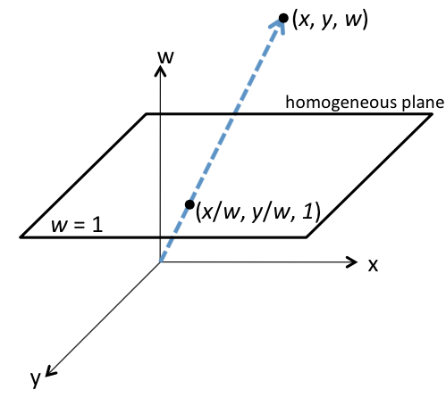
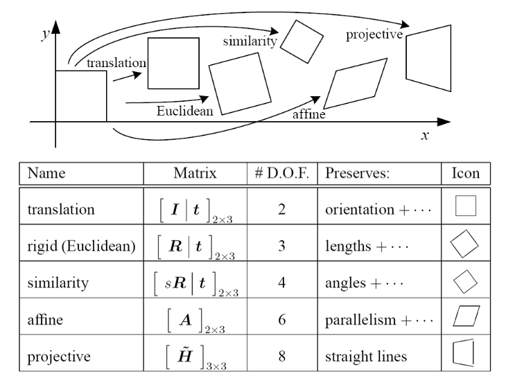

Scientific progress goes 'boink'
These notes are based on the course COS429, which is taught at Princeton by Professor Jianxiong Xiao.
From class notes: Conceptually, each pixel is a sample of the radiance arriving at a camera viewpoint from a direction. The camera records the number of photons captured for each pixel in its sensor in a given period of time and approximates the power (energy from the photons in a given time) for all pixels.
From class notes: A photograph is a slice of the plenoptic function
Homogenous, or projective coordinates form a coordinate system where we can represent points at infinity using finite coordinates. Homogenous coordinates also let us easily represent affine and, in general, projective transformations by matrices.
To get the homogenous coordinate of some coordinate in $\mathbb{R}^n$, we append the number 1 to create a vector of length $n+1$. In the case of a coordinate in $\mathbb{R}^2$, we represent the coordinate $(x,y)$ as:
We add a further stipulation that any non-zero scalar multiple of a homogenous coordinate is considered the same point. We can think of the homogenous coordinate for some $\mathbb{R}^2$ coordinate and all its non-zero scalar multiples as a line in $\mathbb{R}^3$.

Converting back from some homogenous coordinate:
Continuing with our example in $\mathbb{R}^2$, let us consider the plane $z=1$, or all the points of the form $(x,y,1)$. Every point in $\mathbb{R^2}$ corresponds uniquely with a point $(x,y,z)$ on the plane $z=1$. However, if we want to consider all lines in $\mathbb{R}^3$ that pass through the origin, we must examine points of the form $(x,y,0)$. Intuitively, we call these ‘points at infinity’.
Using homogenous coordinates, we can now use the power of linear algebra in ways we could not with normal coordinates.
can now be computed via
Translations are an example of an affine transformation.
Affine transformations are a superset of linear transformations; they relax the requirement that the origin is preserved. Affine transformations, like linear transformations, are still closed under composition and preserve
We can tell if a matrix represents an affine transformation if its last row contains all zeros except for a 1 in the last column. Physically, we interpret affine transformations as some combination of a linear transformation and a translation.
Projective transformations are a superset of affine transformations. Parallel lines do not necessarily remain parallel and ratios are not preserved. We can tell if a matrix represents a projective transformation if its last row is not $[0,0,\ldots,1]$ as is required for an affine transformation.
From Szeliski’s book.
